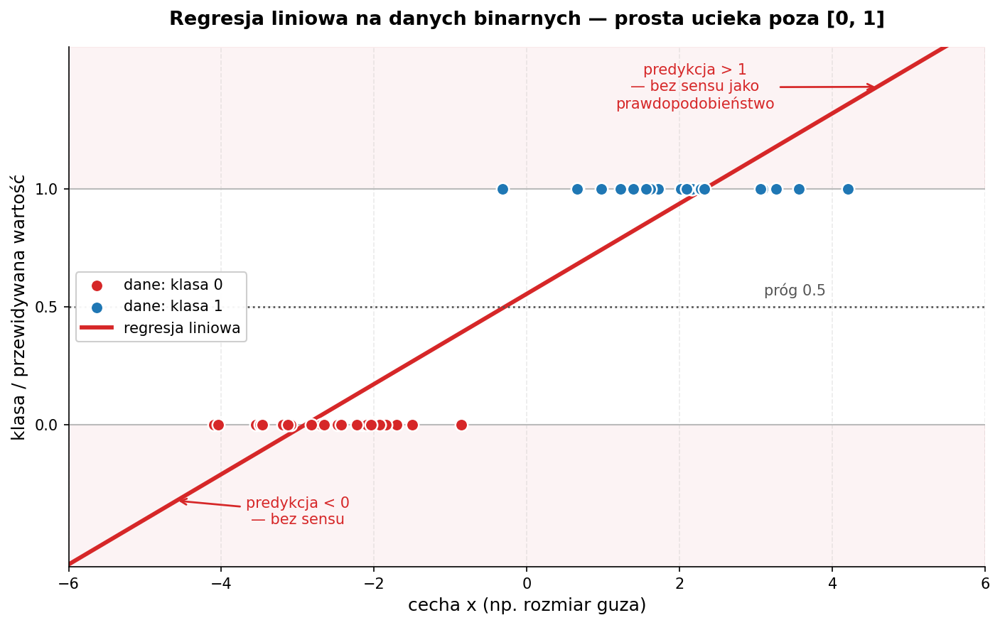
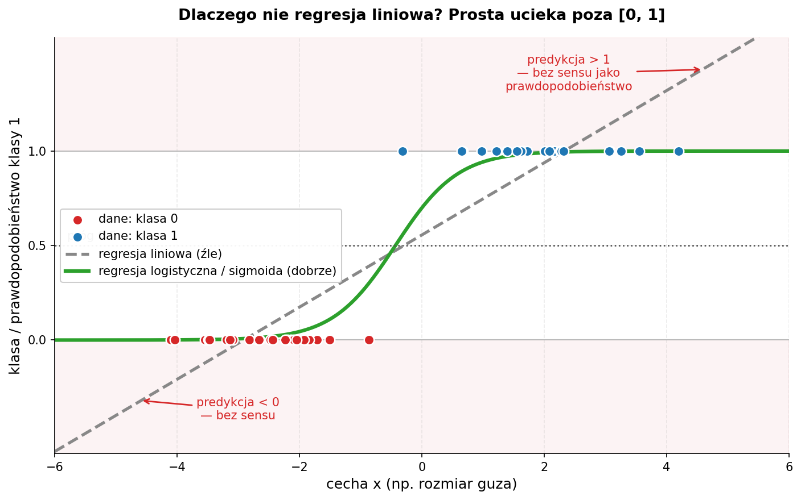

Zajęcia 5#
Modele klasyfikacyjne — 6 algorytmów i kiedy którego użyć#
Poprzednie zajęcia: zbudowaliśmy regresję liniową i przeszliśmy pełny workflow ML — EDA, podział, trening, ewaluacja. Przewidywaliśmy liczbę (cenę, spalanie). Dziś przewidujemy kategorię: spam / nie-spam, przeżył / nie przeżył, nowotwór złośliwy / łagodny. To jest klasyfikacja. Dobra wiadomość: workflow zostaje ten sam. Zła (a właściwie ciekawa): zmieniają się metryki, dochodzi skalowanie cech, i poznajemy aż 6 różnych algorytmów.
Po dzisiejszych zajęciach będziesz w stanie:
- wyjaśnić różnicę między klasyfikacją a regresją i dlaczego accuracy potrafi kłamać,
- czytać macierz pomyłek oraz metryki precision / recall / F1 / ROC-AUC,
- wiedzieć, kiedy skalować cechy (i dlaczego dla KNN/SVM to być albo nie być),
- wytrenować i porównać 6 klasyfikatorów: regresję logistyczną, drzewo decyzyjne, las losowy, KNN, SVM i XGBoost,
- dobrać model do problemu — wiedząc, co każdy z nich robi pod maską i czym płaci.
Środowisko: Google Colab. Większość bibliotek jest preinstalowana; XGBoost instalujemy jedną linijką (patrz sekcja 9).
1. Klasyfikacja vs regresja — co się zmienia?#
| Regresja (zajęcia 4) | Klasyfikacja (dziś) | |
|---|---|---|
Cel (y) |
liczba ciągła (cena, spalanie) | kategoria / klasa (0 lub 1, „pies"/„kot") |
| Wynik modelu | konkretna wartość ŷ |
prawdopodobieństwo przynależności do klasy → próg → klasa |
| Metryki | MAE, RMSE, R² | accuracy, precision, recall, F1, ROC-AUC |
| Pytanie | „ile?" | „która klasa?" |
Skupiamy się na klasyfikacji binarnej (dwie klasy: 0/1), bo na niej najłatwiej zrozumieć metryki. Wszystkie poznane modele radzą sobie też z wieloma klasami — scikit-learn ogarnia to za nas.
Kluczowa intuicja: klasyfikator zwykle nie mówi od razu „klasa 1". Najpierw zwraca prawdopodobieństwo (np. 0.83), a potem stosujemy próg (domyślnie 0.5): powyżej → klasa 1, poniżej → klasa 0. Ten próg będziemy mogli przesuwać — i to ma realne konsekwencje (zaraz zobaczymy, przy precision/recall).
2. Dane do przykładów i przygotowanie#
Przykłady robimy na wbudowanym zbiorze Breast Cancer Wisconsin — 569 guzów opisanych 30 cechami numerycznymi, a celem jest klasyfikacja: złośliwy (0) czy łagodny (1).
import pandas as pd
from sklearn.datasets import load_breast_cancer
dane = load_breast_cancer(as_frame=True)
X = dane.frame.drop(columns=["target"])
y = dane.frame["target"]
print(X.shape) # (569, 30)
print(y.value_counts().to_dict()) # {1: 357, 0: 212} — 1=łagodny, 0=złośliwy
Podział ze stratyfikacją#
W klasyfikacji dochodzi jeden niuans względem zajęć 4: stratify=y. Gwarantuje, że proporcje klas w zbiorze treningowym i testowym będą takie same jak w całości. Bez tego przy niezbalansowanych danych może się zdarzyć, że jedna klasa wpadnie głównie do testu — i wyniki przestaną cokolwiek znaczyć.
from sklearn.model_selection import train_test_split
X_train, X_test, y_train, y_test = train_test_split(
X, y, test_size=0.2, random_state=42, stratify=y
)
Skalowanie cech — nowość, która jest kluczowa dla połowy modeli#
Część modeli (KNN, SVM, regresja logistyczna) liczy odległości albo jest wrażliwa na skalę cech. Jeśli jedna cecha ma wartości w tysiącach, a druga w setnych, ta pierwsza zdominuje obliczenia — nie dlatego, że jest ważniejsza, tylko dlatego, że ma większe liczby. Lekarstwo: standaryzacja (StandardScaler) — każdą cechę przeskalowujemy do średniej 0 i odchylenia 1.
from sklearn.preprocessing import StandardScaler
scaler = StandardScaler()
X_train_s = scaler.fit_transform(X_train) # uczymy skaler i przekształcamy TRAIN
X_test_s = scaler.transform(X_test) # TEST tylko przekształcamy
Najważniejsza zasada skalowania: skaler uczysz tylko na zbiorze treningowym (
fit_transform), a test tylko przekształcasz (transform). Gdybyś dopasował skaler do całości, informacja o teście „przeciekłaby" do treningu (data leakage) i ocena byłaby zawyżona.Które modele wymagają skalowania? KNN, SVM — tak, koniecznie. Regresja logistyczna — pomaga (szybsza zbieżność). Drzewo, las, XGBoost — nie potrzebują, bo dzielą dane progami, a nie liczą odległości. Skalowanie ich nie psuje, więc dla wygody można skalować wszystko.
3. Model 1 — Regresja logistyczna (nasz punkt odniesienia)#
Mimo „regresji" w nazwie to klasyfikator. Pomysł: weź regresję liniową z zajęć 4, a jej wynik (dowolna liczba od −∞ do +∞) przepuść przez funkcję sigmoidalną, która ściśnie go do przedziału (0, 1) — i tak powstaje prawdopodobieństwo.

Powyżej 0.5 → klasa 1, poniżej → klasa 0. Wagi w są interpretowalne tak samo jak w regresji liniowej — dodatnia waga zwiększa prawdopodobieństwo klasy 1.

from sklearn.linear_model import LogisticRegression
logreg = LogisticRegression(max_iter=5000) # więcej iteracji = pewna zbieżność
logreg.fit(X_train_s, y_train)
y_pred = logreg.predict(X_test_s) # klasy (0/1)
y_proba = logreg.predict_proba(X_test_s)[:, 1] # prawdopodobieństwa klasy 1
Na tym zbiorze regresja logistyczna jest bardzo mocna — ok. 98% trafień. To dobry punkt odniesienia: zanim sięgniesz po cięższe działa (XGBoost), zawsze warto zobaczyć, jak radzi sobie prosty, interpretowalny model.
4. Metryki klasyfikacji — bo accuracy potrafi kłamać#
To najważniejsza sekcja teoretyczna dzisiejszych zajęć. Mamy predykcje — jak ocenić, czy są dobre?
Macierz pomyłek (confusion matrix)#
Wszystko zaczyna się tutaj. Zestawiamy, co model przewidział, z tym, co było naprawdę:
PRZEWIDZIANE
złośliwy łagodny
PRAWDZIWE złośliwy TP FN ← FN = przeoczony nowotwór (groźne!)
łagodny FP TN
- TP (true positive) — poprawnie wykryty złośliwy,
- TN (true negative) — poprawnie uznany za łagodny,
- FP (false positive) — fałszywy alarm (łagodny uznany za złośliwy),
- FN (false negative) — przeoczony złośliwy (uznany za łagodny).
from sklearn.metrics import confusion_matrix, ConfusionMatrixDisplay
cm = confusion_matrix(y_test, y_pred)
ConfusionMatrixDisplay(cm, display_labels=["złośliwy", "łagodny"]).plot()
Cztery metryki z tej tabelki#
| Metryka | Wzór | Po ludzku |
|---|---|---|
| Accuracy | (TP+TN) / wszystko | jaki % wszystkich predykcji jest poprawny |
| Precision | TP / (TP+FP) | gdy model mówi „złośliwy", jak często ma rację |
| Recall (czułość) | TP / (TP+FN) | jaki % faktycznych złośliwych model wyłapał |
| F1 | średnia harmoniczna precision i recall | jedna liczba balansująca oba |
Dlaczego sama accuracy kłamie#
Wyobraź sobie zbiór, gdzie 99% guzów jest łagodnych. Model, który zawsze mówi „łagodny", ma 99% accuracy — i jest bezużyteczny, bo nie wykrył ani jednego nowotworu (recall = 0%). To jest dokładnie powód, dla którego przy niezbalansowanych danych patrzymy na precision i recall, a nie na samą accuracy.
Precision vs recall — i po co nam próg#
Tu wraca próg decyzyjny z sekcji 3. To kompromis:
- chcesz wyłapać wszystkie nowotwory (wysoki recall)? Obniż próg — model będzie częściej krzyczeć „złośliwy". Cena: więcej fałszywych alarmów (niższa precision).
- chcesz, żeby alarm był pewny (wysoka precision)? Podnieś próg. Cena: kilka nowotworów się prześlizgnie (niższy recall).
W diagnostyce raka świadomie wybieramy wysoki recall — lepiej wezwać zdrowego pacjenta na dodatkowe badania (FP), niż przeoczyć chorego (FN). W filtrze spamu odwrotnie — wolisz wysoką precision (żeby ważny mail nie trafił do spamu). To zależy od problemu, nie od modelu.
Jeden raport zamiast liczenia ręcznie#
from sklearn.metrics import classification_report
print(classification_report(y_test, y_pred,
target_names=["złośliwy", "łagodny"]))
ROC-AUC — jakość niezależna od progu#
Krzywa ROC pokazuje, jak zmieniają się trafienia i fałszywe alarmy, gdy przesuwamy próg przez cały zakres. Pole pod nią — AUC (Area Under Curve) — to jedna liczba podsumowująca jakość modelu niezależnie od wyboru progu:
- AUC = 1.0 → idealny,
- AUC = 0.5 → model nie lepszy niż rzut monetą,
- im bliżej 1.0, tym lepiej.
from sklearn.metrics import roc_auc_score, RocCurveDisplay
auc = roc_auc_score(y_test, y_proba) # uwaga: prawdopodobieństwa, nie klasy!
print(f"ROC-AUC: {auc:.3f}") # tu ~0.995
RocCurveDisplay.from_predictions(y_test, y_proba)
Pamiętaj: accuracy/precision/recall/F1 liczymy z predykcji klas (
predict), a ROC-AUC z prawdopodobieństw (predict_proba). To częsty błąd początkujących.
5. Model 2 — Drzewo decyzyjne#
Najbardziej intuicyjny z modeli — to po prostu gra w 20 pytań. Model uczy się sekwencji warunków typu „czy cecha X > 5?", a każda odpowiedź prowadzi w dół drzewa aż do liścia z decyzją.
Na każdym podziale drzewo wybiera pytanie, które najlepiej rozdziela klasy (mierzone gini lub entropią). Kluczowy hiperparametr to max_depth — głębokość. Zbyt głębokie drzewo przeucza się (zapamiętuje pojedyncze przypadki); płytkie jest ogólniejsze.
from sklearn.tree import DecisionTreeClassifier, plot_tree
import matplotlib.pyplot as plt
tree = DecisionTreeClassifier(max_depth=4, random_state=42)
tree.fit(X_train, y_train) # drzewo NIE potrzebuje skalowania!
plt.figure(figsize=(16, 8))
plot_tree(tree, feature_names=X.columns, class_names=["złośliwy", "łagodny"],
filled=True, fontsize=8)
plt.show()
Zalety: w pełni interpretowalne (można narysować i pokazać lekarzowi), nie wymaga skalowania, radzi sobie z nieliniowością. Wady: pojedyncze drzewo łatwo się przeucza i bywa niestabilne (mała zmiana danych → inne drzewo). Stąd pomysł na następny model...
6. Model 3 — Las losowy (Random Forest)#
Skoro jedno drzewo bywa kapryśne — zróbmy ich setki i pozwólmy głosować. To mądrość tłumu: każde drzewo trenuje się na lekko innej próbce danych i innym podzbiorze cech (technika zwana baggingiem), a końcowa decyzja to głosowanie większościowe.
Pojedyncze drzewa się mylą, ale ich błędy się uśredniają, a trafne odpowiedzi wzmacniają. Las prawie zawsze bije pojedyncze drzewo i jest dużo stabilniejszy.
from sklearn.ensemble import RandomForestClassifier
forest = RandomForestClassifier(n_estimators=200, random_state=42)
forest.fit(X_train, y_train) # też bez skalowania
Las daje też ważność cech (feature_importances_) — które cechy najczęściej decydowały o podziałach:
import pandas as pd
waznosc = pd.Series(forest.feature_importances_, index=X.columns)
print(waznosc.sort_values(ascending=False).head(5))
Zalety: mocny „od ręki", odporny na przeuczenie, mało strojenia, ważność cech. Wady: tracimy czytelność pojedynczego drzewa (200 drzew się nie narysuje), wolniejszy i cięższy niż jedno drzewo.
7. Model 4 — KNN (k najbliższych sąsiadów)#
Najprostszy pomysł ze wszystkich: „jesteś taki, jak twoi sąsiedzi". Żeby sklasyfikować nowy punkt, KNN znajduje k najbliższych mu punktów ze zbioru treningowego i robi wśród nich głosowanie.
KNN liczy odległości — dlatego skalowanie jest absolutnie konieczne. Bez niego cecha o dużych wartościach zdominuje odległość i wynik będzie bez sensu.
from sklearn.neighbors import KNeighborsClassifier
knn = KNeighborsClassifier(n_neighbors=5)
knn.fit(X_train_s, y_train) # KONIECZNIE dane przeskalowane!
Kluczowy hiperparametr to k: małe k (np. 1) jest czułe na szum, duże k wygładza granice decyzyjne. Zalety: zero założeń o danych, trywialny w idei. Wady: wolny przy predykcji (musi porównać się z całym zbiorem), kiepski przy wielu cechach (klątwa wymiarowości), wymaga skalowania.
8. Model 5 — SVM (maszyna wektorów nośnych)#
SVM szuka najszerszej możliwej „ulicy" (marginesu) rozdzielającej dwie klasy. Im szerszy margines między klasami, tym pewniejsza i lepiej generalizująca granica. Punkty leżące na krawędziach tej ulicy to wektory nośne — to one definiują granicę (reszta danych jest nieistotna).
● ● │ ╲ margines
● ● ● │ ▲ ╲
────────────●─────┼──────▲──── ← granica decyzyjna (środek ulicy)
● ● │ ▲ ▲ ╱
● ● │ ▲ ╱
najszersza „ulica" między klasami
A co, jeśli klas nie da się rozdzielić linią? Tu wchodzi kernel trick — SVM potrafi „zakrzywić" przestrzeń (jądro rbf), żeby znaleźć nieliniową granicę. SVM też liczy odległości, więc skalowanie jest konieczne.
from sklearn.svm import SVC
svm = SVC(kernel="rbf", probability=True, random_state=42)
svm.fit(X_train_s, y_train) # znów dane przeskalowane
# probability=True pozwala później na predict_proba (potrzebne do ROC-AUC)
Zalety: bardzo skuteczny na średnich zbiorach, dobrze radzi sobie z wieloma cechami, kernel trick łapie nieliniowość. Wady: wolny na dużych zbiorach, wymaga skalowania i strojenia (C, gamma), słabo interpretowalny.
9. Model 6 — XGBoost (król danych tabelarycznych)#
Las losowy budował drzewa niezależnie i uśredniał. XGBoost robi coś sprytniejszego — buduje drzewa po kolei, gdzie każde kolejne naprawia błędy poprzednich. To boosting: zamiast tłumu niezależnych ekspertów masz sztafetę, w której każdy biegacz poprawia to, co zepsuł poprzedni.
drzewo 1 ──→ błędy ──→ drzewo 2 (uczy się na błędach 1) ──→ błędy ──→ drzewo 3 ...
└──────────── suma → predykcja ─────────────┘
To od lat domyślny wybór do danych tabelarycznych i najczęstszy zwycięzca konkursów Kaggle. Trzeba go doinstalować:
from xgboost import XGBClassifier
xgb = XGBClassifier(
n_estimators=200, max_depth=3, learning_rate=0.1, eval_metric="logloss"
)
xgb.fit(X_train, y_train) # jako model drzewiasty — skalowania nie wymaga
Zalety: zwykle najwyższa jakość na danych tabelarycznych, ważność cech, radzi sobie z brakami. Wady: więcej hiperparametrów do strojenia, łatwiej przeuczić niż las, mniej interpretowalny.
10. Porównanie — kiedy czego użyć?#
| Model | Skalowanie? | Interpretowalność | Szybkość treningu | Łapie nieliniowość | Typowe zastosowanie |
|---|---|---|---|---|---|
| Regresja logistyczna | pomaga | ⭐⭐⭐ wysoka | bardzo szybki | nie | baseline, gdy liczy się interpretacja |
| Drzewo decyzyjne | nie | ⭐⭐⭐ wysoka | szybki | tak | gdy trzeba pokazać reguły decyzji |
| Las losowy | nie | ⭐⭐ średnia | średni | tak | solidny „pierwszy strzał" bez strojenia |
| KNN | konieczne | ⭐ niska | brak (leniwy) | tak | małe zbiory, prosty baseline |
| SVM | konieczne | ⭐ niska | wolny na dużych | tak (kernel) | średnie zbiory, dużo cech |
| XGBoost | nie | ⭐ niska | średni | tak | maksymalna jakość na danych tabelarycznych |
Reguła kciuka:
- zacznij od regresji logistycznej (baseline + interpretacja),
- chcesz solidny wynik bez strojenia → las losowy,
- walczysz o ostatnie procenty jakości → XGBoost,
- mały zbiór / szybki prototyp → KNN,
- średni zbiór z wyraźną strukturą → SVM.
Wyniki na naszym zbiorze (test) — żeby zobaczyć rzędy wielkości:
| Model | Accuracy | F1 | ROC-AUC |
|---|---|---|---|
| Regresja logistyczna | 0.982 | 0.986 | 0.995 |
| SVM | 0.982 | 0.986 | 0.995 |
| Las losowy | 0.956 | 0.966 | 0.993 |
| XGBoost | 0.947 | 0.959 | 0.994 |
| KNN | 0.956 | 0.966 | 0.979 |
| Drzewo decyzyjne | 0.939 | 0.951 | 0.934 |
Zwróć uwagę: na tym akurat (małym, czystym, dobrze separowalnym) zbiorze prosta regresja logistyczna wygrywa z XGBoostem. To ważna lekcja — najcięższy model nie zawsze jest najlepszy. Zaczynaj od prostych.
Łączymy wszystko — trenujemy i porównujemy 6 modeli naraz#
Spięjmy całość w jedną pętlę, która trenuje wszystkie modele i zbiera metryki do tabeli porównawczej:
import pandas as pd
from sklearn.linear_model import LogisticRegression
from sklearn.tree import DecisionTreeClassifier
from sklearn.ensemble import RandomForestClassifier
from sklearn.neighbors import KNeighborsClassifier
from sklearn.svm import SVC
from xgboost import XGBClassifier
from sklearn.metrics import accuracy_score, f1_score, roc_auc_score
# Skalujemy raz dla wszystkich — modele drzewiaste to zignorują, reszcie pomoże
modele = {
"Regresja logistyczna": LogisticRegression(max_iter=5000),
"Drzewo decyzyjne": DecisionTreeClassifier(max_depth=4, random_state=42),
"Las losowy": RandomForestClassifier(n_estimators=200, random_state=42),
"KNN": KNeighborsClassifier(n_neighbors=5),
"SVM": SVC(probability=True, random_state=42),
"XGBoost": XGBClassifier(n_estimators=200, max_depth=3,
learning_rate=0.1, eval_metric="logloss"),
}
wyniki = []
for nazwa, model in modele.items():
model.fit(X_train_s, y_train)
y_pred = model.predict(X_test_s)
y_proba = model.predict_proba(X_test_s)[:, 1]
wyniki.append({
"model": nazwa,
"accuracy": accuracy_score(y_test, y_pred),
"F1": f1_score(y_test, y_pred),
"ROC_AUC": roc_auc_score(y_test, y_proba),
})
tabela = pd.DataFrame(wyniki).sort_values("F1", ascending=False)
print(tabela.to_string(index=False))
Jedna pętla, jeden ranking. Dokładnie tak wygląda pierwszy etap realnego projektu ML — zanim zaczniesz stroić hiperparametry, sprawdzasz, który rodzaj modelu w ogóle pasuje do Twoich danych.
Praca projektowa#
Zadanie 5 — Titanic: kto przeżył? (20 pkt, podzielone na etapy)#
Uwaga: przykłady liczyliśmy na zbiorze breast cancer. Zadania robisz na innym zbiorze — Titanic (przewidujemy, czy pasażer przeżył katastrofę:
survived= 0/1). Te same kroki, inne dane — przejdź cały proces samodzielnie.
Zbiór jest wbudowany w seaborn:
🏋️ Zadanie 5.1 — Przygotowanie danych (4 pkt)#
Ten zbiór jest „brudniejszy" niż breast cancer i ma kilka pułapek.
-
(1 pkt) Wyświetl
shape,info(), rozkład klas (df["survived"].value_counts()) oraz braki danych (df.isna().sum()). W komentarzu napisz, ile jest pasażerów, czy klasy są zbalansowane i które kolumny mają najwięcej braków. -
(1.5 pkt) Wyczyść dane:
- Usuń kolumnę
alive— to wyciek danych (data leakage):aliveto dosłownie to samo cosurvived, tylko jako tekst. Gdybyś ją zostawił, model miałby 100% i byłby bezużyteczny w praktyce. - Usuń kolumnę
deck(zbyt dużo braków) oraz kolumny zdublowane/tekstowe powielające inne (class,who,embark_town,adult_male,alone— pochodne od pozostałych). - Zostaw cechy:
pclass,sex,age,sibsp,parch,fare,embarked. - Uzupełnij braki w
agemedianą, a wembarkedwartością najczęstszą (modą).
W komentarzu wypisz, które kolumny usunąłeś i dlaczego usunięcie alive jest konieczne.
-
(1 pkt) Zakoduj cechy tekstowe na liczby — regresja i reszta modeli przyjmują tylko liczby. Najprościej
pd.get_dummies(df, columns=["sex", "embarked"], drop_first=True). Wyświetlhead()po zakodowaniu. -
(0.5 pkt) Rozdziel na
X/y(survived), zrób podział ze stratyfikacją (stratify=y,test_size=0.25,random_state=42) i przeskaluj cechyStandardScaler(ucz skaler tylko na train!).
🏋️ Zadanie 5.2 — Regresja logistyczna + metryki (4 pkt)#
-
(1 pkt) Wytrenuj
LogisticRegressionna przeskalowanym zbiorze treningowym i zrób predykcje na teście. -
(1 pkt) Wyświetl macierz pomyłek (
confusion_matrixlubConfusionMatrixDisplay). W komentarzu opisz, ile było FN (przeoczonych ocalałych) i FP. -
(1.5 pkt) Policz accuracy, precision, recall i F1. Zinterpretuj recall w kontekście problemu (jaki % faktycznie ocalałych pasażerów model poprawnie wskazał?).
-
(0.5 pkt) Wyświetl
classification_report.
🏋️ Zadanie 5.3 — Drzewo i las losowy (4 pkt)#
-
(1 pkt) Wytrenuj
DecisionTreeClassifier(ustawmax_depth) i oceń accuracy + F1 na teście. -
(1 pkt) Wytrenuj
RandomForestClassifier(n_estimators=200) i oceń tak samo. -
(0.5 pkt) Porównaj wyniki drzewa i lasu w komentarzu — który lepszy i czy to zgodne z intuicją z wykładu?
-
(1.5 pkt) Wyciągnij z lasu ważność cech (
feature_importances_), wyświetl 5 najważniejszych (najlepiej jako wykres słupkowy). W komentarzu: które cechy najmocniej decydowały o przeżyciu? (Czy płeć i klasa biletu są na górze?)
🏋️ Zadanie 5.4 — KNN i SVM + dlaczego skalowanie ma znaczenie (4 pkt)#
-
(1 pkt) Wytrenuj
KNeighborsClassifierna przeskalowanych danych dla dwóch różnych wartościk(np. 3 i 15). Porównaj F1. -
(1 pkt) Wytrenuj
SVC(kernel="rbf") na przeskalowanych danych i oceń accuracy + F1. -
(1.5 pkt) Eksperyment ze skalowaniem: wytrenuj KNN jeszcze raz, ale na danych nieprzeskalowanych (surowe
X_train). Porównaj jego F1 z wersją przeskalowaną z punktu 1. -
(0.5 pkt) W komentarzu wyjaśnij, dlaczego skalowanie zmieniło wynik KNN (a nie zmieniłoby wyniku lasu losowego).
🏋️ Zadanie 5.5 — XGBoost + finałowe porównanie (4 pkt)#
-
(1 pkt) Zainstaluj (
pip install xgboost) i wytrenujXGBClassifier. Oceń accuracy + F1. -
(1.5 pkt) Narysuj krzywą ROC (
RocCurveDisplay) dla co najmniej dwóch modeli na jednym wykresie i policz ich ROC-AUC (pamiętaj:predict_proba, niepredict). -
(1.5 pkt) Zbuduj tabelę porównawczą wszystkich 6 modeli (accuracy, F1, ROC-AUC), posortowaną po F1 — wzorem sekcji „Łączymy wszystko". W komentarzu: który model wygrał na Titanicu i czy to ten sam, co na breast cancer?
Podsumowanie punktacji#
| Zadanie | Temat | Punkty |
|---|---|---|
| 5.1 | Przygotowanie danych (czyszczenie, leakage, kodowanie, skalowanie) | 4 |
| 5.2 | Regresja logistyczna + metryki klasyfikacji | 4 |
| 5.3 | Drzewo decyzyjne + las losowy + ważność cech | 4 |
| 5.4 | KNN + SVM + eksperyment ze skalowaniem | 4 |
| 5.5 | XGBoost + ROC-AUC + finałowe porównanie | 4 |
| Suma | 20 |
Maksymalne 20 pkt zdobywasz, prezentując rozwiązanie prowadzącemu na zajęciach. Zadanie wysyłasz na Moodle najpóźniej dzień przed kolejnymi zajęciami.